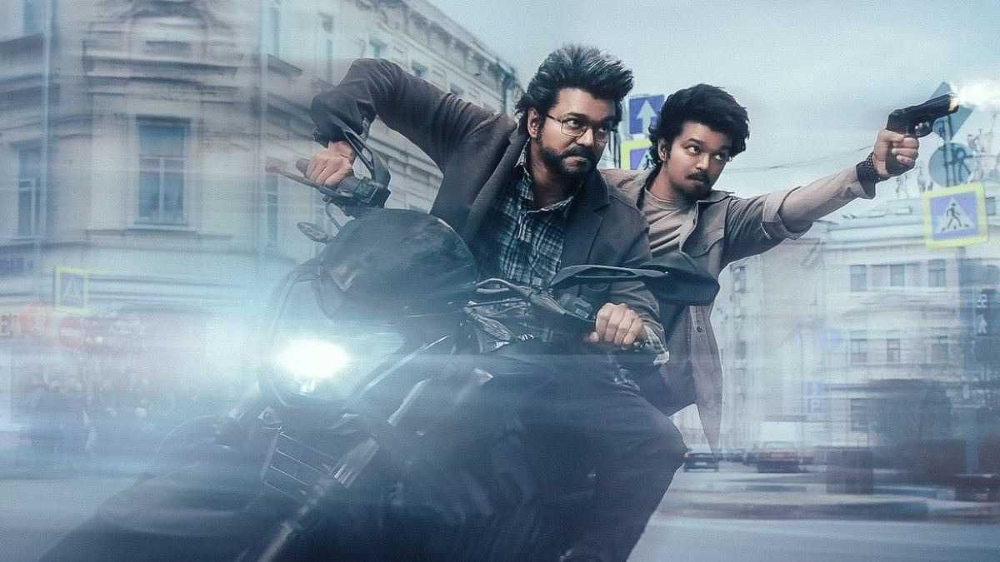

INDIA

The creator of modern sushi is believed to be Hanaya Yohei.
CRICKET

The creator of modern sushi is believed to be Hanaya Yohei.
Krishna Temple

The creator of modern sushi is believed to be Hanaya Yohei.
Laptops under 30k

The creator of modern sushi is believed to be Hanaya Yohei.
Basketball

The creator of modern sushi is believed to be Hanaya Yohei.
Crime Alert

The creator of modern sushi is believed to be Hanaya Yohei.
Sucide's in last 24hrs

The creator of modern sushi is believed to be Hanaya Yohei.
The Greatest Of All Time
Thalapathy Vijay's latest film, GOAT (Greatest of All Time), has entered the ₹400 crore club, making it the second highest-grossing movie in the actor's career.
Kalki 2898 AD

Prabhas's 'Kalki 2898 AD' surpassed the lifetime total of Shah Rukh Khan's 'Jawan' in 40 days to become the 4th highest-grossing Indian film of all time.

National Dog Day
National Dog Day has been created so that all breeds of dogs are celebrated; mixed and pure. The day helps to galvanize the public so that they can recognise the number of dogs that must be rescued on a yearly basis, from pure breed rescuers, rescues, and public shelters. The day is all about paying tribute to these incredible animals who work selflessly to bring comfort, keep us safe, and save lives. Every day, these animals put their lives on the line.

The future od Amazon Drone deliveries
Amazon invited reporters from around the world to attend our annual Delivering the Future event at a fulfillment center and innovation lab near Seattle, Washington. We shared the evolution and journey of our operations network—including how we fulfilled our first customer orders in a garage in 1995 to how we’re using innovative technologies and the latest in artificial intelligence (AI) to make that process better for customers and employees today.

Japanese food we love-Sushi
The creator of modern sushi is believed to be Hanaya Yohei, who invented nigiri-zushi, a type of sushi most known today, in which seafood is placed on hand-pressed vinegared rice, around 1824 in the Edo period (1603–1867). It was the fast food of the chōnin class in the Edo period.Sushi is traditionally made with medium-grain white rice, though it can be prepared with brown rice or short-grain rice.

Japanese food we love-Sushi
The creator of modern sushi is believed to be Hanaya Yohei, who invented nigiri-zushi, a type of sushi most known today, in which seafood is placed on hand-pressed vinegared rice, around 1824 in the Edo period (1603–1867). It was the fast food of the chōnin class in the Edo period.Sushi is traditionally made with medium-grain white rice, though it can be prepared with brown rice or short-grain rice.

Meet Gagan Anand the 'world's best' Indian Chef
The creator of modern sushi is believed to be Hanaya Yohei, who invented nigiri-zushi, a type of sushi most known today, in which seafood is placed on hand-pressed vinegared rice, around 1824 in the Edo period (1603–1867). It was the fast food of the chōnin class in the Edo period.Sushi is traditionally made with medium-grain white rice, though it can be prepared with brown rice or short-grain rice.

The best things to do and see in Newport
The creator of modern sushi is believed to be Hanaya Yohei, who invented nigiri-zushi, a type of sushi most known today, in which seafood is placed on hand-pressed vinegared rice, around 1824 in the Edo period (1603–1867). It was the fast food of the chōnin class in the Edo period.Sushi is traditionally made with medium-grain white rice, though it can be prepared with brown rice or short-grain rice.

Hemanth the leading buisness man in USA
The creator of modern sushi is believed to be Hanaya Yohei, who invented nigiri-zushi, a type of sushi most known today, in which seafood is placed on hand-pressed vinegared rice, around 1824 in the Edo period (1603–1867). It was the fast food of the chōnin class in the Edo period.Sushi is traditionally made with medium-grain white rice, though it can be prepared with brown rice or short-grain rice.

What Facebook's new mission can and can't fix
The creator of modern sushi is believed to be Hanaya Yohei, who invented nigiri-zushi, a type of sushi most known today, in which seafood is placed on hand-pressed vinegared rice, around 1824 in the Edo period (1603–1867). It was the fast food of the chōnin class in the Edo period.Sushi is traditionally made with medium-grain white rice, though it can be prepared with brown rice or short-grain rice.